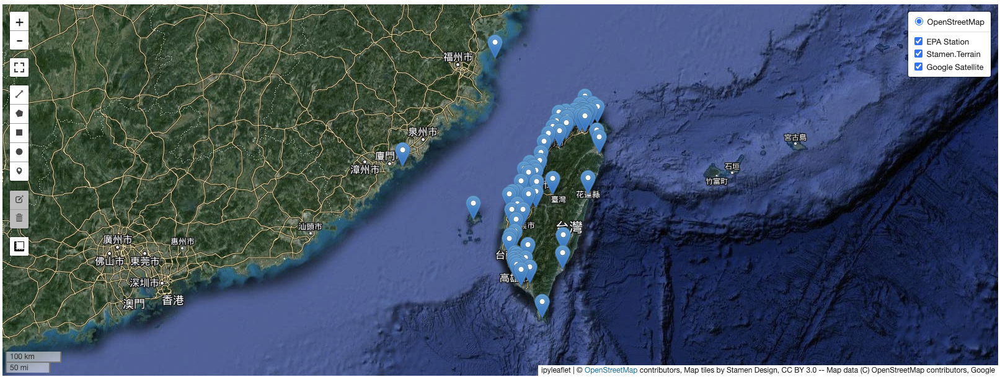
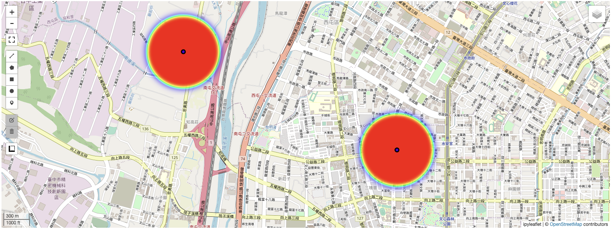
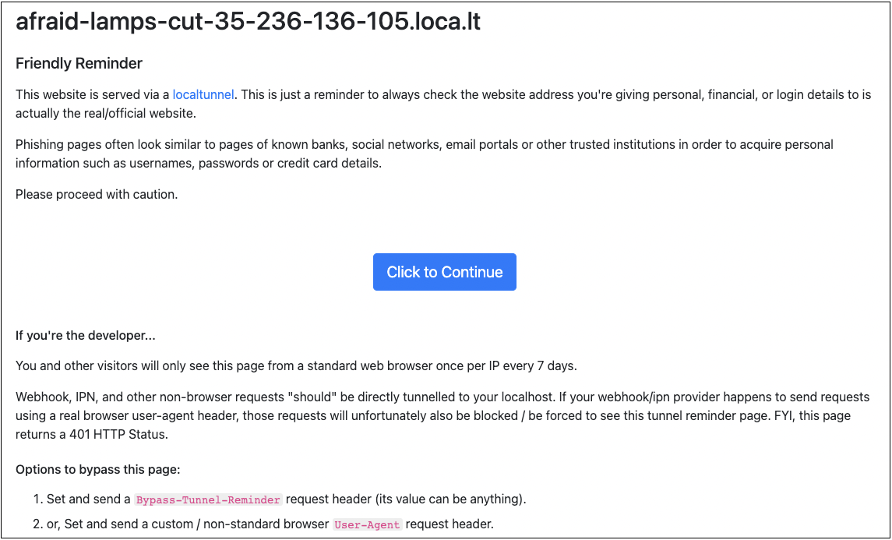

7.3. Leafmap Applications

Table Of Contents
In earlier sections, we showed you how to analyze geographic data using programming and how to use GIS (Geographic Information System) software for basic analysis and display of this data. Now, we’re going to teach you how to use Leafmap in Python for GIS tasks, and how to develop websites with Streamlit. At the end, we’ll show you how to combine Leafmap and Streamlit to create your own basic web-based GIS system. This will allow you to display your data analysis results on web pages.
Package Installation and Importing
In this chapter, we’re going to use a variety of packages including pandas, geopandas, leafmap, ipyleaflet, osmnx, streamlit, geocoder, and pyCIOT. However, except for pandas, these packages are not pre-installed on our development platform, Google Colab. So, we need to install them ourselves. To make this process smoother and avoid flooding the screen with too much information, we’ve added the ‘-q’ parameter to each installation command. This will help keep the output on the screen more streamlined and easier to read.
!pip install -q geopandas
!pip install -q leafmap
!pip install -q ipyleaflet
!pip install -q osmnx
!pip install -q streamlit
!pip install -q geocoder
!pip install -q pyCIOT
Once the installation is done, you can use the syntax provided below to import the necessary packages. This will complete the setup required for the tasks in this chapter.
import pandas as pd
import geopandas as gpd
import leafmap
import ipyleaflet
import osmnx
import geocoder
import streamlit
from pyCIOT.data import *
Data Access
In this article, we work with several datasets from the Civil IoT Taiwan Data Service Platform. This includes air quality data from the Environmental Protection Administration (EPA), and seismic data from the National Earthquake Engineering Research Center and the Central Weather Bureau.
For the EPA air quality data, we utilize the pyCIOT package to fetch the latest readings from all the EPA air quality monitoring stations. We then convert this data, which is initially in JSON format, into a more usable format called a DataFrame. This is done using the json_normalize() method from the pandas package. In our analysis, we’ll focus on specific data points: the station names, their latitude and longitude, and the concentration of ozone (O3). The code for gathering and processing this data is as follows:
epa_station = Air().get_data(src="OBS:EPA")
df_air = pd.json_normalize(epa_station)
df_air['O3'] = 0
for index, row in df_air.iterrows():
sensors = row['data']
for sensor in sensors:
if sensor['name'] == 'O3':
df_air.at[index, 'O3'] = sensor['values'][0]['value']
df_air = df_air[['name','location.latitude','location.longitude','O3']]
df_air

Similarly, we’ll extract data from the seismic monitoring stations managed by the National Earthquake Engineering Research Center and the Central Weather Bureau. In this case, we’ll only retain essential information such as the station names and their longitude and latitude for our upcoming tasks. The code used to collect and process this data is as follows:
quake_station = Quake().get_station(src="EARTHQUAKE:CWB+NCREE")
df_quake = pd.json_normalize(quake_station)
df_quake = df_quake[['name','location.latitude','location.longitude']]
df_quake

We’ve successfully shown you how to read air quality (air) data and seismic (quake) data. In the next part of our discussion, we’ll use these datasets to demonstrate operations and applications using the Leafmap suite. It’s worth noting that these methods can also be applied to other datasets available on the Civil IoT Taiwan Data Service Platform. We encourage you to experiment with these techniques on your own.
Leafmap Basics
Basic Data Presentation
With the air quality data df_air and seismic data df_quake that we’ve prepared, our next step is to convert these datasets from the DataFrame format (provided by the pandas package) to the GeoDataFrame format. The GeoDataFrame format, supported by the geopandas package, is more suitable for handling geographic information.
Once we have our data in the GeoDataFrame format, we can utilize Leafmap’s add_gdf() method. This method allows us to create a distinct presentation layer for each dataset. After these layers are created, we can easily add both of them to our map in a single step.
gdf_air = gpd.GeoDataFrame(df_air, geometry=gpd.points_from_xy(df_air['location.longitude'], df_air['location.latitude']), crs='epsg:4326')
gdf_quake = gpd.GeoDataFrame(df_quake, geometry=gpd.points_from_xy(df_quake['location.longitude'], df_quake['location.latitude']), crs='epsg:4326')
m1 = leafmap.Map(center=(23.8, 121), toolbar_control=False, layers_control=True)
m1.add_gdf(gdf_air, layer_name="EPA Station")
m1.add_gdf(gdf_quake, layer_name="Quake Station")
m1

In the map generated by our program, you’ll notice the names of the two datasets in the top-right corner of the map. They are added as two separate layers, allowing users to select and view the layer they’re interested in. However, when trying to view both layers simultaneously, there’s an issue: both layers use the same icon for representation, leading to confusion on the map.
To address this, we introduce a different approach for displaying data. We use the GeoData layer format provided by the ipyleaflet suite. By utilizing Leafmap’s add_layer() method, we can add these GeoData layers to the map. To make each dataset distinct and easily identifiable, we represent air quality stations with small blue circle icons and seismic stations with small red circle icons.
geo_data_air = ipyleaflet.GeoData(
geo_dataframe=gdf_air,
point_style={'radius': 5, 'color': 'black', 'fillOpacity': 0.8, 'fillColor': 'blue', 'weight': 3},
name="EPA stations",
)
geo_data_quake = ipyleaflet.GeoData(
geo_dataframe=gdf_quake,
point_style={'radius': 5, 'color': 'black', 'fillOpacity': 0.8, 'fillColor': 'red', 'weight': 3},
name="Quake stations",
)
m2 = leafmap.Map(center=(23.8, 121), toolbar_control=False, layers_control=True)
m2.add_layer(geo_data_air)
m2.add_layer(geo_data_quake)
m2

Cluster Data Presentation
When dealing with maps that have a large number of data points, it can become difficult to clearly observe individual points. In such scenarios, clustering is a useful technique. Clustering groups nearby points together when viewing a map from a distance, displaying them as a single point that shows the number of clustered items. As the user zooms in on the map, these clusters start to separate, revealing the individual points. Once zoomed in enough, each point can be seen independently, allowing users to view information about specific data points.
Let’s use the seismic station data as an example. By employing the add_points_from_xy() method from Leafmap, we can display the data from df2 on the map in a clustered format. This approach will make it easier to manage and view a large number of points on the map.
m3 = leafmap.Map(center=(23.8, 121), toolbar_control=False, layers_control=True)
m3.add_points_from_xy(data=df_quake, x = 'location.longitude', y = 'location.latitude', layer_name="Quake Station")
m3

Change Leafmap Basemap
Leafmap primarily uses OpenStreetMap as its default basemap, but it also offers a wide variety of over 100 other basemap options. This allows users to switch the basemap according to their personal preferences or specific requirements. To explore the basemaps currently supported by Leafmap, you can use the following syntax:
layers = list(leafmap.basemaps.keys())
layers
From the array of basemaps available in Leafmap, let’s choose SATELLITE and Stamen.Terrain for our demonstration. We can add these basemaps to our map as new layers using the add_basemap() method from the Leafmap package. Once added, Leafmap automatically activates all layers and stacks them in the order they were added. You can then easily select the specific layer you wish to view using the layer menu located in the upper right corner of the map. This feature allows for flexible and customized map viewing, tailored to your specific needs or preferences.
m4 = leafmap.Map(center=(23.8, 121), toolbar_control=False, layers_control=True)
m4.add_gdf(gdf_air, layer_name="EPA Station")
m4.add_basemap("SATELLITE")
m4.add_basemap("Stamen.Terrain")
m4

Apart from utilizing the basemaps provided by Leafmap, you can also integrate layers from Google Maps by using its XYZ Tiles service. This allows you to add Google’s satellite imagery as layers on your map. The method to do this is as follows:
m4.add_tile_layer(
url="https://mt1.google.com/vt/lyrs=y&x={x}&y={y}&z={z}",
name="Google Satellite",
attribution="Google",
)
m4

Integrate OSM Resources
Leafmap not only includes built-in resources but also incorporates a wealth of external geographic information sources. One of the most prominent among these is OSM (OpenStreetMap), a widely recognized and comprehensive open-source geographic information resource. OSM offers a variety of resources, all of which can be explored on the OSM website. For a detailed view of what’s available, you can refer to the complete list of properties provided on their website. This list outlines the diverse range of features and data types that OSM offers, making it a valuable resource for anyone working with geographic information in Leafmap.
In the next example, we’ll demonstrate how to obtain and display the outline of a city on the map using the add_osm_from_geocode() method from the Leafmap package. We’ll use Taichung City as our example. By combining this with the location information from the EPA air quality monitoring station data, we can easily identify which stations are located within Taichung City. This method effectively allows us to visually integrate specific geographic outlines with our existing dataset, offering a clearer understanding of the data’s geographical context.
city_name = "Taichung, Taiwan"
m5 = leafmap.Map(center=(23.8, 121), toolbar_control=False, layers_control=True)
m5.add_layer(geo_data_air)
m5.add_osm_from_geocode(city_name, layer_name=city_name)
m5

Following the previous step, we’ll further enhance our map by using the add_osm_from_place() method in the Leafmap package. This method allows us to search for and add specific facilities within Taichung City to our map layer. As an example, let’s focus on factory facilities. We’ll utilize OSM’s land use data to identify the locations and areas of factories in Taichung City. This information can be very useful when analyzed in conjunction with the locations of the EPA air quality monitoring stations, providing insights into potential environmental impacts or correlations.
For a broader range of OSM facility types that you might want to explore and add to your map, you can refer to the complete properties list provided by OpenStreetMap. This extensive list offers a variety of options, enabling detailed and specific geographic analyses and visualizations.
m5.add_osm_from_place(city_name, tags={"landuse": "industrial"}, layer_name=city_name+": Industrial")
m5

The Leafmap package also offers a convenient feature for finding OSM facilities near a specific location, which is incredibly useful for data analysis and interpretation. For instance, in the following example, we’ll use the add_osm_from_address() method to search for religious facilities (with the attribute “amenity”: “place_of_worship”) within a 1,000-meter radius of Qingshui Station in Taichung. Additionally, we’ll employ the add_osm_from_point() method to look for school facilities (attributes “amenity”: “school”) within 1,000 meters of the GPS coordinates (24.26365, 120.56917) of Taichung Qingshui Station.
We will then superimpose the results from these two searches as separate layers onto our existing map. This layered approach allows for a detailed and nuanced visual representation of how different types of facilities are distributed in relation to a specific point, offering valuable insights for spatial analysis.
m5.add_osm_from_address(
address="Qingshui Station, Taichung", tags={"amenity": "place_of_worship"}, dist=1000, layer_name="Shalu worship"
)
m5.add_osm_from_point(
center_point=(24.26365, 120.56917), tags={"amenity": "school"}, dist=1000, layer_name="Shalu schools"
)
m5

Heatmap Presentation
A heatmap is a graphical representation that uses color variations to show the intensity of events in a two-dimensional format. When integrated with a map, a heatmap can effectively illustrate the intensity of events at various scales, depending on the map’s scale. It’s a widely used and powerful tool for visualizing data.
However, it’s important to ensure that the characteristics of the data are suitable for heatmap representation. Otherwise, it can be easily confused with other graphical data interpolation methods like IDW (Inverse Distance Weighting) and Kriging, which we discussed in Chapter 5. As an example, let’s use the O3 concentration data from the EPA air quality dataset to create a corresponding heatmap. This approach will demonstrate how heatmaps can effectively visualize specific data points, like pollution levels, across a geographic area.
m6 = leafmap.Map(center=(23.8, 121), toolbar_control=False, layers_control=True)
m6.add_layer(geo_data_air)
m6.add_heatmap(
df_air,
latitude='location.latitude',
longitude='location.longitude',
value="O3",
name="O3 Heat map",
radius=100,
)
m6

The initial view of the heatmap might not reveal much detail, especially when looking at a larger area. However, if you zoom in on a specific region, like Taichung city, you’ll notice a significant change in the heatmap’s appearance. This zoomed-in view can reveal more nuanced patterns and concentrations, showing how the heatmap provides different insights at various scales.
This characteristic of heatmaps is particularly useful as it allows for both a broad overview when zoomed out and a detailed analysis when zoomed in. In the context of Taichung city, zooming in can help you better understand the distribution and intensity of O3 concentrations in more localized areas, offering a clearer picture of air quality in different parts of the city.


The previous example with the O3 concentration data actually illustrates a common pitfall in using heatmaps: not all types of data are suitable for this kind of representation. The O3 data reflects specific, local concentrations of ozone. These values don’t necessarily accumulate or disperse to adjacent areas, especially when the map scale changes. Therefore, using O3 concentration data for a heatmap can be misleading. Instead, a geographic interpolation method, as described in Chapter 5, would be more appropriate for this type of data.
To demonstrate an appropriate use of heatmaps, let’s consider the location data of seismic monitoring stations. We’ll add a field named num, assigning it a default value of 10. This data is more suitable for a heatmap because it represents discrete, quantifiable events (in this case, the presence of seismic stations) that can be aggregated over an area. Here’s the code we’ll use to create a heatmap that accurately represents the distribution of Taiwan’s Seismic Monitoring Stations. This will give a clearer and more accurate depiction of seismic monitoring coverage across different regions.
df_quake['num'] = 10
m7 = leafmap.Map(center=(23.8, 121), toolbar_control=False, layers_control=True)
m7.add_layer(geo_data_quake)
m7.add_heatmap(
df_quake,
latitude='location.latitude',
longitude='location.longitude',
value="num",
name="Number of Quake stations",
radius=200,
)
m7

Split Window Presentation
In data analysis and interpretation, switching between various basemaps can be crucial to gain different geographic perspectives. The Leafmap package accommodates this need with the split_map() method. This method divides the original map display into two submaps, allowing each to use a different basemap. This feature is particularly useful for comparative analysis or for obtaining a more comprehensive understanding of the geographic context. Here’s an example of how you can use this method:
m8 = leafmap.Map(center=(23.8, 121), toolbar_control=False, layers_control=True)
m8.add_gdf(gdf_air, layer_name="EPA Station")
m8.split_map(
left_layer="SATELLITE",
right_layer="Stamen.Terrain"
)
m8

Leafmap for Web Applications
To facilitate the quick sharing of processed map information, the Leafmap suite offers an integrated approach with the Streamlit suite. This combination leverages Leafmap’s GIS expertise and Streamlit’s web development capabilities, enabling you to quickly build a Web GIS system. Below, we’ll demonstrate how this works through a simple example. You can use this as a foundation to develop and expand your own Web GIS service.
Building a web system with the Streamlit package involves two key steps:
- Packaging the Python Program: First, you need to package the Python program you want to execute into a Streamlit object. This packaging process is written into an
app.pyfile. - Executing app.py: Once your
app.pyis ready, you execute this file on your system to run your web application.
Since our operations are all conducted on the Google Colab platform, we can take advantage of its unique features. Google Colab allows us to write app.py directly into its temporary storage area using the %%writefile magic command. Colab can then read and execute the code directly from this temporary storage. So, for the file writing part of step 1, we can proceed as follows:
%%writefile app.py
import streamlit as st
import leafmap.foliumap as leafmap
import json
import pandas as pd
import geopandas as gpd
from pyCIOT.data import *
contnet = """
Hello World!
"""
st.title('Streamlit Demo')
st.write("## Leafmap Example")
st.markdown(contnet)
epa_station = Air().get_data(src="OBS:EPA")
from pandas import json_normalize
df_air = json_normalize(epa_station)
geodata_air = gpd.GeoDataFrame(df_air, geometry=gpd.points_from_xy(df_air['location.longitude'], df_air['location.latitude']), crs='epsg:4326')
with st.expander("See source code"):
with st.echo():
m = leafmap.Map(center=(23.8, 121), toolbar_control=False, layers_control=True)
m.add_gdf(geodata_air, layer_name="EPA Station")
m.to_streamlit()
For the second part, we use the following instructions:
!streamlit run app.py & npx localtunnel --port 8501
When you run it, you should see a result that looks something like this:

Next, click on the link that appears after the phrase “your url is:”. This will open a page in your browser that should look like the following.

Lastly, click on “Click to Continue” to run the Python code contained in the file named app.py. In this example, you’ll see a map displaying the distribution of the EPA’s air quality monitoring stations, which is created using the leafmap package.

Conclusion
This article has introduced the Leafmap package as a tool for displaying geographic data and incorporating external resources. We’ve shown how combining Leafmap with the Streamlit package can create a basic web-based GIS (Geographic Information System) service on the Google Colab platform. It’s important to mention that Leafmap has many additional advanced features that we haven’t covered here. For a more detailed and comprehensive understanding, you can refer to the following resources.
References
- Leafmap Tutorial (https://www.youtube.com/watch?v=-UPt7x3Gn60&list=PLAxJ4-o7ZoPeMITwB8eyynOG0-CY3CMdw)
- leafmap: A Python package for geospatial analysis and interactive mapping in a Jupyter environment (https://leafmap.org/)
- Streamlit Tutorial (https://www.youtube.com/watch?v=fTzlyayFXBM)
- Map features - OpenStreetMap Wiki (https://wiki.openstreetmap.org/wiki/Map_features)
- Heat map - Wikipedia (https://en.wikipedia.org/wiki/Heat_map)